Walter Benjamin Digital
Table of Contents
Abstract
Walter Benjamin Digital is a digital partial edition of the eleventh volume of the Critical Complete Edition of Walter Benjamin’s works, published by Suhrkamp since 2008. It contains handwritten texts from the field of work of Berliner Kindheit um neunzehnhundert and its predecessor Berliner Chronik in the form of facsimilated manuscripts and superimposed diplomatic transcriptions. Walter Benjamin Digital is not geared toward exhausting the possibilities of a digital edition; hence the printed volumes must remain key for research purposes.
Einleitung
Am Beispiel von Walter Benjamin Digital zeigt sich, dass es einen essenziellen Unterschied macht, ob ein Editionsprojekt primär ein digitales oder ein analoges Medium zum Ziel hat. Die im Vergleich zur Buchform größeren Möglichkeitsräume einer digitalen Edition können nicht ausgeschöpft werden, wenn die spezifischen Logiken der digitalen Umgebung für die Erstellung und Publikation der Edition nicht bestimmend sind.1 Walter Benjamin Digital ist in diesem Sinne auch weniger als ›Digital Scholarly Edition‹ (DSE) denn als ›Digitales Archiv‹ (vgl. Sahle 2017, 34) mit Fokus auf die Repräsentation von Faksimiles einzustufen, das jedoch aufgrund der Darbietung eines kritisch edierten Textes in den Bereich von DSE hineinreicht.
Walter Benjamin Digital ist eine Ergänzung zum elften Band der Kritischen Gesamtausgabe (KA) der Werke und des Nachlasses Walter Benjamins und ist unter https://www.walter-benjamin.online zu finden (Werner/Lindner 2019). Nicht damit zu verwechseln ist https://www.walter-benjamin-online.de, eine Informationsseite zur gedruckten KA, die seit 2008 bei Suhrkamp erscheint. Verzeichnet sind dort alle 21 Bände2, wobei es zu jenen, die bereits erschienen sind oder die demnächst erscheinen werden, auch bibliographische Angaben, Leseproben und kurze Beschreibungstexte gibt. In eine digitale Edition bzw. eine online zugängliche »Teiledition der faksimilierten Manuskripte« (Suhrkamp o. J.) führt nur der Eintrag zum elften Band (Stand 7.8.2022). Künftig soll es auch für die Bände 17, 18 und 20 eine digitale Edition geben.
Der elfte Band der KA umfasst den Textbestand zum Werkbereich der Berliner Kindheit um neunzehnhundert und seinem Vorläufer Berliner Chronik – Benjamins umfangreichste Texte über seine Kindheit in Berlin. Sowohl die Berliner Kindheit um neunzehnhundert als auch die Berliner Chronik erschienen erst nach Benjamins Tod im Jahr 1940. Die Berliner Chronik wurde erstmals 1970 von Gershom Scholem bei Suhrkamp herausgegeben. 1985 erschien sie noch einmal im sechsten Band der zwischen 1972 und 1999 veröffentlichten Gesammelten Schriften, herausgegeben von Rolf Tiedemann und Hermann Schweppenhäuser (die revidierte Taschenbuchausgabe wurde dann 1991 publiziert). Die erste Buchausgabe der Berliner Kindheit um neunzehnhundert – zuvor waren bereits Auszüge anonym oder unter Pseudonym in der Vossischen und der Frankfurter Zeitung veröffentlicht worden (vgl. Lemke 2011, 653–654) – wurde von Theodor W. Adorno im Jahr 1950 beschafft. Adorno kannte jedoch die von Benjamin autorisierten Fassungen nicht und schuf dementsprechend einen Text, der von Benjamin so nie vorgesehen war. Eine Edition einer autorisierten Fassung konnte, nachdem 1981 die Fassung letzter Hand in der Pariser Nationalbibliothek gefunden wurde, erst 1987 mit einem Nachwort von Adorno und herausgegeben von Rolf Tiedemann bei Suhrkamp veröffentlicht werden. Die Gießener Fassung erschien dann erst 2000 bei Suhrkamp, herausgegeben von Rolf Tiedemann. Zuvor hatte Tillman Rexroth bereits Adornos Edition revidiert und erweitert und im Rahmen der Gesammelten Schriften (Bd. 4, 1972) veröffentlicht.
2019 wurde schließlich eine gedruckte kritische Edition des Werkbestands in zwei Teilbänden publiziert. Die zwischen 1932 und 1938 entstandenen autobiographischen Prosaminiaturen und die dazugehörigen Dokumente (z. B. Entwürfe) umfassen in der von Burkhardt Lindner und Nadine Werner unter Mitarbeit von Anja Nowak herausgegebenen gedruckten Edition 652 Seiten. Der erste Teilband enthält Materialien zur Berliner Chronik (unterteilt in »Entwürfe und Aufzeichnungen zur Berliner Chronik« sowie »Versfassung zur Berliner Chronik«) und solche zur Berliner Kindheit um neunzehnhundert (unterteilt in die Manuskripte »Felizitas-Exemplar«3 und »Stefan-Exemplar«, »Inhaltsverzeichnisse, Aufzeichnungen, Entwürfe und Fassungen«4, »Einzelne Manuskripte« sowie das »Berliner-« und das »Pariser-Manuskript«, »Drucke« und »Übersetzungen«). Der zweite, 466 Seiten lange Teilband beinhaltet unter anderem die Abschnitte »Entstehungs- und Publikationsgeschichte«, »Zur Edition«, »Lesarten, Varianten, Erläuterungen und Nachweise«, »Dokumente«, »Zur Ausgabe«, »Personenregister« und »Alphabetische Synopse der Stückfassungen«.
Walter Benjamin Digital (Werner/Lindner 2019), eine Teiledition vor allem der Texte des ersten Teilbandes, entstand zwischen 2016 und 2019 im Auftrag der Hamburger Stiftung zur Förderung von Wissenschaft und Kultur. Herausgegeben wird sie von Nadine Werner, Mitarbeiterin des 2004 eingerichteten und 12.000 Blatt5 umfassenden Walter Benjamin Archivs in der Akademie der Künste, Berlin, und Burkhardt Lindner, der jedoch im Jahr vor Beginn des Projekts verstarb; Anja Nowak arbeitete ebenso mit.6 Walter Benjamin Digital füllt eine Lücke, da es bis zum Zeitpunkt der Veröffentlichung keine vergleichbar umfangreiche digitale Aufbereitung von Texten Benjamins gab. Es ist die erste digitale Edition eines Werks bzw. Werkbereichs Walter Benjamins, wenn auch nicht das überhaupt erste digitale Projekt zu ihm.7 Eine Premiere in der Benjamin-Forschung ist zudem die mit Walter Benjamin Digital geschaffene freie Zugänglichkeit von Faksimiles. Nun kann also auch frei im Netz nachvollzogen werden, worauf sich Gershom Scholem bezog, als er in seinem Nachwort zur erwähnten Edition der Berliner Chronik (1970) von Entzifferungsschwierigkeiten schrieb.
Die mit Walter Benjamin Digital realisierte faksimilierte Edition ist insbesondere für die biographische Benjamin-Forschung und jene, die sich mit Benjamins Arbeitsweisen beschäftigt, eine wertvolle Neuheit. Die Webseite, auf der die Manuskripte aus dem Werkbereich der Berliner Kindheit um neunzehnhundert und der Berliner Chronik bereitgestellt werden, versteht sich als »Arbeitsinstrument« (Werner/Lindner 2019). Das Ziel sei nicht, den Text zu konstituieren, sondern ihn »lesbar« (ebd.) zu machen. Gemeint ist damit wohl, dass es nicht um die Erstellung einer vollständigen historisch-kritischen Edition geht und auf textgenetische Analysen größtenteils – abgesehen von den primär werkorientierten Stückemarkierungen – verzichtet wird. Vielmehr kann die Edition als Ergänzung zu den gedruckten Teilbänden und als Lesehilfe für die Manuskripte verstanden werden, wie sie in den Archiven zu finden sind. Im Unterschied zur gedruckten Edition beinhaltet die digitale Edition keine Typoskripte, Drucke, Übersetzungen oder andere einschlägige Dokumente wie Korrespondenzstücke. Es fehlt auch der gesamte Apparat, der sich im zweiten gedruckten Teilband befindet, sowie jegliche Kommentare und weitere Kontextmaterialien. Insbesondere ist anzumerken, dass die der digitalen Edition zugrundeliegenden Editions- und Kodierungsrichtlinien nicht offengelegt und textkritische Zeichen nicht aufgelöst werden. So geht auch etwa der methodische Ansatz (diplomatisch, materialorientiert, dokumentbezogen) nur implizit hervor.
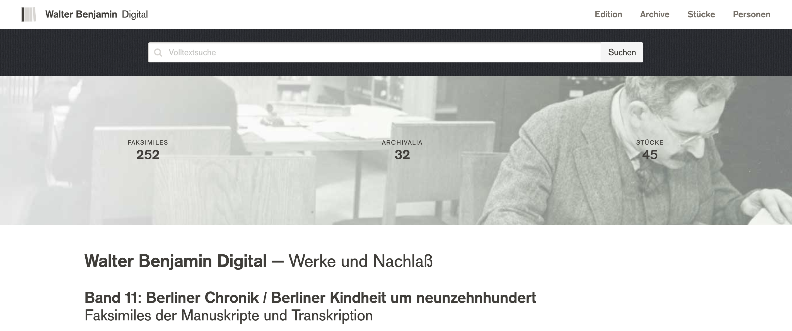
Wege in die Edition
Walter Benjamin Digital ist in fünf wesentliche Bereiche unterteilt: die Startseite und die Reiter »Edition«, »Archive«, »Stücke« und »Personen«. Die vier Reiter sind graphisch sehr ähnlich aufgebaut (dunkelgraue serifenlose Schrift vor einem weißen Hintergrund) und stellen sowohl mögliche Einstiege in die Edition als auch »Kontexte« dar, insofern sie jeweils die Blätterreihenfolge in der Manuskriptansicht vorgeben.
Startseite
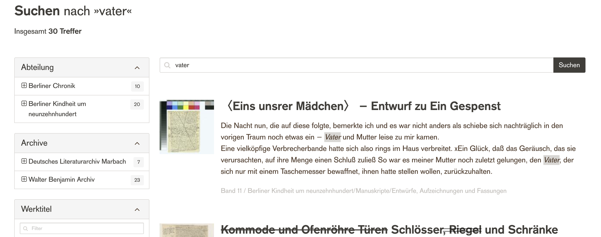
Unterhalb der Suchleiste befindet sich ein kurzer Einführungstext. Ebenso sind hier die Anzahl der in der digitalen Edition enthaltenen Faksimiles (252), jene der Archivalien (32) und jene der Stücke (45) zu finden – Klicks auf die Zahlen führen in die entsprechenden Reiter »Edition«, »Archive« und »Stücke«.11 Darunter befinden sich Zitate, Fotos und Faksimile-Ausschnitte. Das erste Zitat kann als Einstieg in den edierten Text dienen und stammt aus der Berliner Chronik. Benjamin meint hier, sein Deutsch würde deshalb als ›gut‹ eingeschätzt werden, weil er das Wort »ich« so wenig gebrauche – ein ironisch wirkender Kommentar auf der Startseite eines autobiographischen Werks. Das zweite Zitat stammt aus einem Brief an Alfred Cohn und erweckt den (falschen) Eindruck, die Edition enthalte auch die in der gedruckten KA vorhandenen Korrespondenzstücke. Daneben befindet sich ein wenig aussagender Info-Block zum Felizitas-Exemplar.
»Edition«
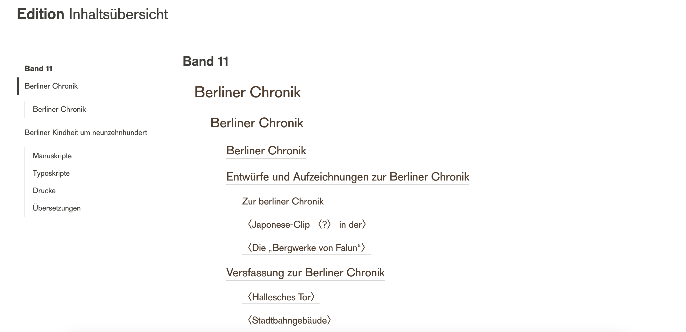
»Archive«
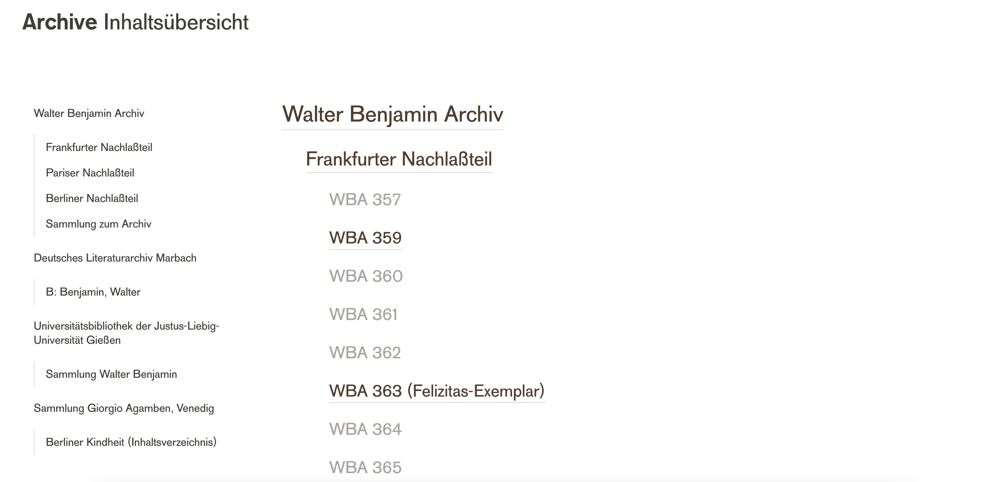
»Stücke«
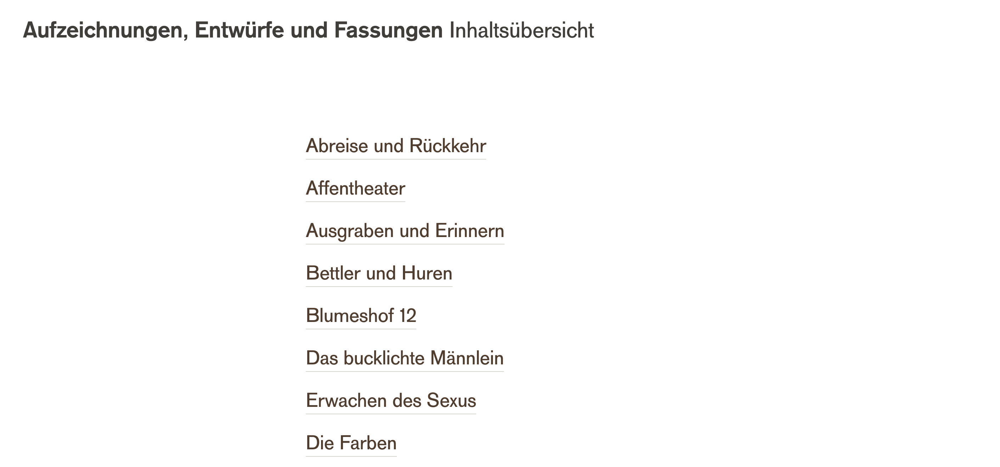
»Personen«
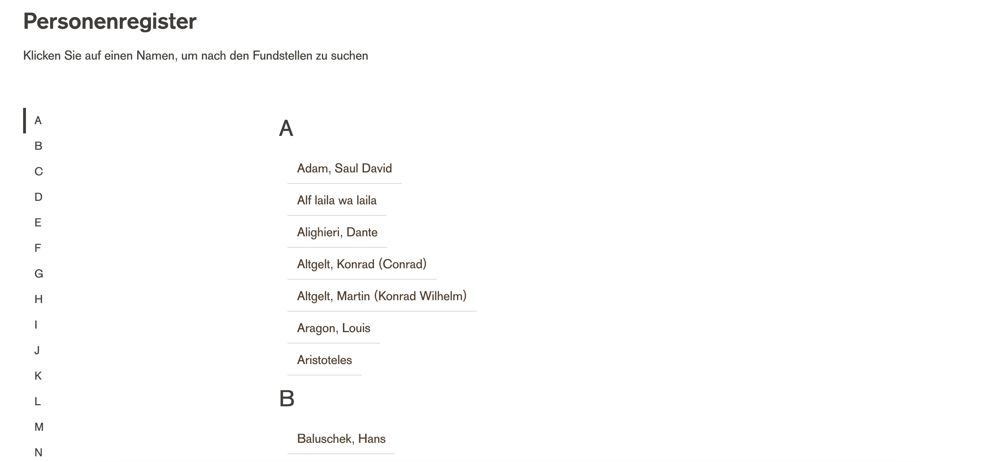
Manuskriptansicht
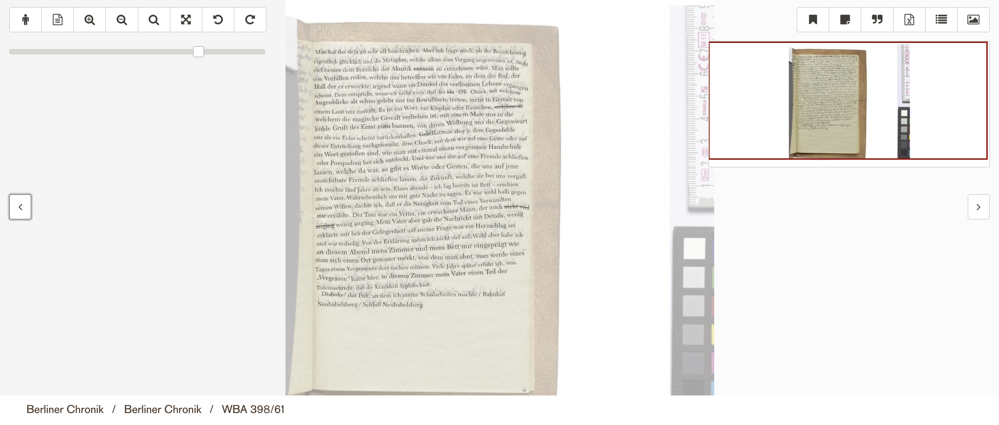
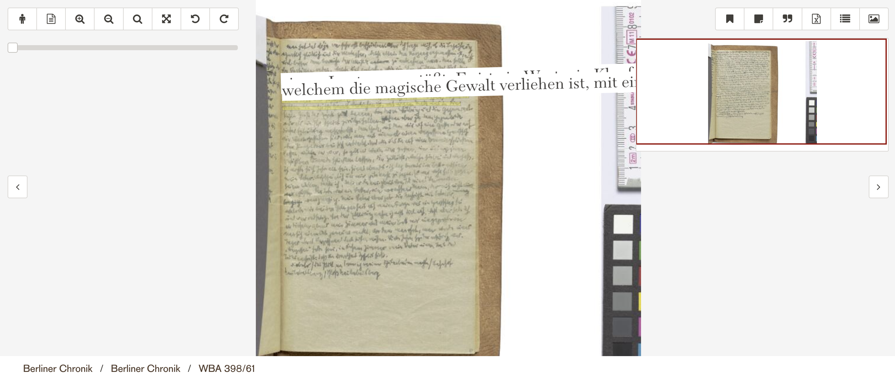
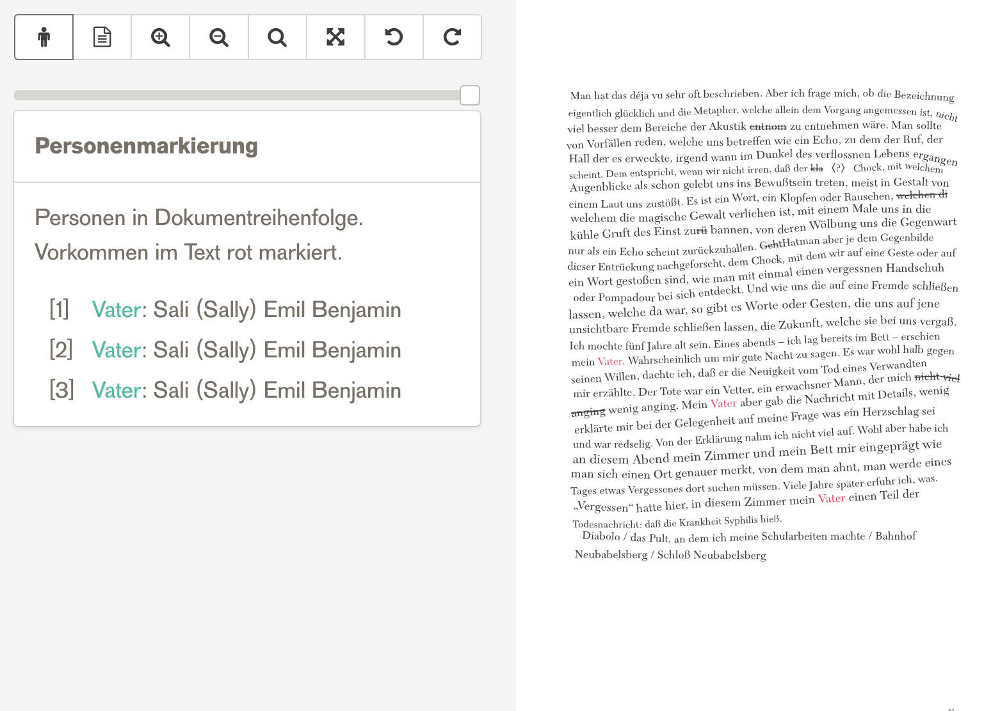 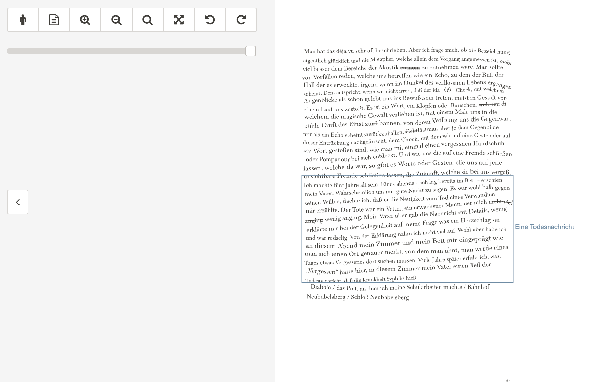
Das Symbolmenü rechts oben bietet noch weitere Features. Zum einen sind das Metadaten. Diese sind mit einem Verweis auf die Buchausgabe versehen, fallen dementsprechend sehr kurz aus und sind zudem nur prosaisch (d. h. nicht formalisiert) erfasst. Zu fast allen Manuskriptseiten werden jedenfalls die Seitenbreite und -höhe sowie ggf. die Maße des Konvoluts angegeben. Während etwa Schreibmaterialien auf den Faksimiles relativ gut zu erkennen sind, hätte sich – insbesondere vor dem Hintergrund der Bedeutung von Materialität für Benjamins Schreiben – beispielsweise noch eine Beschreibung des Papiers angeboten, dessen Haptik über den Bildschirm nicht nachvollziehbar ist. Schließlich enthält das Symbolmenu eine Zitierempfehlung mit einem Zeitstempel, wodurch die Zitation an einen bestimmten zeitlichen Zustand gebunden wird, auch wenn die digitale Edition keine technische Versionierung implementiert. Inwiefern die angebotenen URLs persistent sind, dazu macht die Edition keine Aussage.
Im Symbolmenü rechts oben kann auf ein kontextbezogenes Inhaltsverzeichnis zugegriffen werden. Dort ist es möglich, durch die Kontexte »Edition«, »Archive« und »Stücke« zu navigieren und die Einordnung der angezeigten Manuskriptseite in diese Kontexte (z. B. bei »Stücke« die Zugehörigkeit zu einem Konvolut) zu eruieren, ohne die Seite dafür zu verlassen. Ähnlich funktioniert das Feature zu den Konvoluten, das ebenso über das Symbolmenü zu erreichen ist. Dieses Feature zeigt alle Faksimiles des Konvoluts, zu dem die angezeigte Manuskriptseite gezählt wird, in kontextbezogenen Miniaturansichten (»Edition«, »Archive«, »Stücke«, »Suchergebnisse«13 und »Merkliste«) an. Schade ist, dass man zwar für die Navigation auf der Seite bleiben kann, wenn man jedoch eine andere Seite ansehen möchte, diese nicht in einem neuen Tab öffnen kann (ein grundsätzliches Problem der Edition). Zur kontextbezogenen Konvolutansicht sei ferner hinzugefügt, dass die Bezeichnungen der Konvolute, etwa aufgrund überflüssiger Spatien und abgeschnittener Betitelungen, nicht immer fehlerfrei sind.14
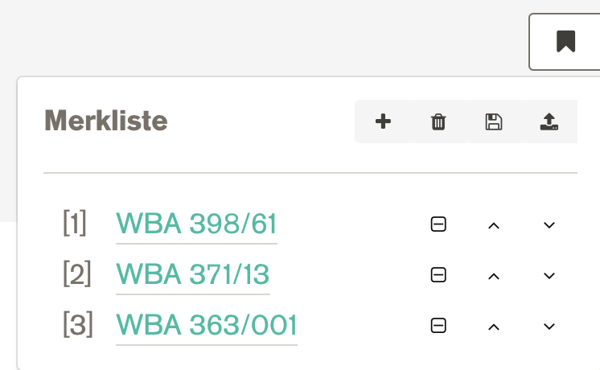
Datenmodell
Kodierungsrichtlinien sind, wie bereits erwähnt, genauso wenig vorhanden
wie andere technische Dokumentationen. Es ist auch kein projektspezifisches Schema in
die TEI-Dokumente eingebunden, was die Nachvollziehbarkeit des Datenmodells
erschwert. Da jedoch zumeist15 lediglich auf TEI zurückgegriffen wird,
geben die TEI-Richtlinien (vgl. TEI Consortium
2022) eine erste Orientierung. Die Grundstruktur eines jeden Dokuments ist
folgende (s. Code 1):
Das <titleStmt/> ist, wie das
<publicationStmt/>, die <profileDesc/> und
die Elemente <history/> und <origin/>, leer. Im
Tag <msIdentifier/> wird stets das Walter Benjamin Archiv
angeführt, was zum Beispiel bei einem TEI-Dokument zu einer Seite aus dem
»Stefan-Exemplar«, das im Deutschen Literaturarchiv Marbach liegt, unverständlich
ist. Die <revisionDesc/> ermöglicht es grundsätzlich
nachzuvollziehen, wann das Dokument von wem kodiert wurde. Die Kürzel in den Werten
der @who-Attribute werden jedoch nicht aufgelöst, es handelt sich also
nur um Daten und Initialen, die diesem Element entnommen werden können (s. Code 2).
Wünschenswert wären auf jeden Fall Angaben zum Titel und Autor, zu den
Herausgeber_innen, der Lizenz16 und der Sprache des Dokuments. Außerdem wären
Jahresangaben sowie Signaturen17 oder andere eindeutige
Identifier hilfreich. Fraglich bleibt auch, warum nicht zumindest die prosaischen
Metadaten aus dem UI in die TEI-Dokumente aufgenommen wurden.
Im <facsimile/>-Tag (s. Code 3) wird sodann das dem Dokument zugrundeliegende
Faksimile angegeben. Dabei handelt es sich jedoch um ein lokales Objekt und nicht um
eine URL18, die zur entsprechenden
Seite in der digitalen Edition oder zu einer anderen öffentlich zugänglichen
Ressource führen würde.
Im Element <sourceDoc/> sind schließlich die
Transkriptionen zu finden, die unter Rückgriff auf das TEI-Modell zur »embedded
transcription« topographisch mit den Faksimiles in Beziehung gesetzt werden (s. Code 4).19 Zuerst wird eine <surface/> definiert, deren
@xml:id sich vom <facsimile/>-Tag ableitet. Dann
wird eine <zone/> festgelegt, also ein Bereich mit Text, dessen
@xml:id sich wiederum am <surface/>-Tag
orientiert.20 Innerhalb einer
<zone/> gibt es <line/>-Tags, die UUIDs21 besitzen, Textzeilen
beinhalten und gegebenenfalls @corresp-Attribute haben, die prosaisch
auf Stücke verweisen, zu denen die Zeilen gezählt werden.
Gemäß dem TEI-Modell der »embedded transcription« verwendet die Edition
auf Zeilenebene drei zentrale Elemente22 zur
Kodierung textueller Phänomene, die primär als graphischer Befund erfasst werden:
<mod/>, <seg/> und <g/>.
<mod/> wird für alle Änderungen im Text (Streichungen,
Überschreibungen, Hinzufügungen etc.) herangezogen. Näher bestimmt werden diese durch
entsprechende Werte von @rend- und @type-Attributen, etwa
"strikethrough" für Streichungen und "supplied" für
Hinzufügungen der Herausgeber_innen. Jenseits der graphisch-orientierten Kodierung
mit den oben genannten Elementen, ließe sich in einer weniger dokument- und mehr
textzentrierten Edition auch auf spezifischere TEI-Tags zurückgreifen wie
beispielsweise auf <del/> für Streichungen und
<supplied/> für Herausgeber_inneneingriffe. In sich ist die
dokumentzentrierte Auszeichnung der Edition jedoch konsistent. So werden Personen
bzw. der graphische Befund ihrer Erwähnung mit dem Element <seg/>,
das die Kodierung von Segmenten unterhalb des Block-Levels ermöglicht, kodiert, und
nicht etwa mit <persName> oder einem <rs/>-Tag
(mit @type="person"). <seg/>-Elemente weisen
@corresp-Attribute auf, die mittels interner ID vermutlich auf
Einträge in das Personenregister verweisen. Zur Gänze nachvollziehbar ist die
Verweisstruktur allerdings nicht, da die IDs der Registereinträge im UI und die URLs
einzelner Personeneinträge nicht angezeigt werden.
<g/> dient schließlich der Auszeichnung spezieller von Walter
Benjamin verwendeter Zeichen, beispielsweise um Einfügungen in die Zeile zu
markieren, die mittels eines @ref-Attributs vermutlich auf einen intern
definierten Zeichensatz verweisen. Wie bei den bereits genannten Elementen wäre auch
hier eine Dokumentation der Attributwerte bzw. des speziellen Zeichensatzes sinnvoll,
da die Werte keine sprechenden und ohne Blick auf das Faksimile nicht nachvollziehbar
sind. Die TEI-Richtlinien schlagen auch deshalb bei der Verwendung von
<g> eine Dokumentation der @ref-Werte innerhalb
von <glyph/>-Tags im Header vor, was im weitestgehend leeren
<teiHeader/> der Benjamin-Edition nicht umgesetzt wurde.
Umsetzung von FAIR-Prinzipien
Findable ist Walter Benjamin Digital bei einer Suche nach dem Titel oder, was für eine gute Suchmaschinenoptimierung oder Popularität der Seite spricht, auch nur beispielsweise bei einer Suche nach »Walter Benjamin Edition« über Google. Teilweise verzeichnen auch einschlägige Editionskataloge wie jener von Patrick Sahle (2020 ff.) die Edition.23 Forschungsdatenrepositorien wie Zenodo, Phaidra oder das DARIAH-DE Repository erfassen Walter Benjamin Digital ebenso wenig wie größere Kataloge, z. B. der WorldCat, der Karlsruher Virtuelle Katalog (KVK)24 oder die OPACs der DNB, der ÖNB oder der Schweizerischen Nationalbibliothek. In sozialen Netzwerken ist das Projekt auch kaum präsent. Langfristig wären für die Gewährleistung der Auffindbarkeit der Edition sowohl Katalogeinträge wünschenswert als auch eine Stellungnahme der Edition zur Permanenz der in der Edition angebotenen Links.
Die, wie schon festgehalten, auf der Oberfläche dreisprachige digitale Teiledition des elften Bandes der KA ist insofern accessible als es keine Zugangsbeschränkungen gibt. Den »Web Content Accessibility Guidelines« (vgl. Kirkpatrick et al. 2018) entspricht Walter Benjamin Digital laut eines Web Accessibility-Testanbieters (vgl. Level Access o. J.), der die Barrierefreiheit digitaler Ressourcen testet und mit dem einige Manuskriptseiten stichprobenmäßig untersucht wurden, zu rund 70% (die Startseite erreicht nur rund 60%).25
Bedingt interoperable ist Walter Benjamin Digital insofern die XML-Dateien (s. o.) den standardisierten und verbreiteten TEI-Richtlinien entsprechen. Wie bereits erwähnt, fehlen jedoch sowohl zentrale Metadaten in den TEI-Dokumenten, technische Dokumentationen wie Kodierungsrichtlinien und Erläuterungen zur IIIF26-Schnittstelle.
Reusable ist die Edition insofern einzelne Manuskriptseiten (seitenweise) im XML/TEI27-Format heruntergeladen werden können. Andere Downloadoptionen (z. B. TEI-Dokumente aller edierten Manuskriptseiten, PDF oder EPUB gibt es nicht. Weiter distribuiert und potenziell öffentlich nachgenutzt dürfen die Dokumente auch nicht werden, wodurch vor allem die institutionelle reusabilty (etwa für anschließende Projekte) stark eingeschränkt wird.
Fazit
Walter Benjamin Digital ist so stark mit der gedruckten KA verzahnt, dass nicht von einer eigenständigen DSE die Rede sein kann und die gedruckten Teilbände für die Forschung weiterhin zentral bleiben müssen. Vor allem im Hinblick auf die Suchmöglichkeiten und die digitale Repräsentation der Faksimiles stellt sie jedoch eine wertvolle Ergänzung zu den gedruckten Teilbänden der KA dar. Wünschenswert wäre insbesondere eine Nachreichung von Editionsprinzipien und Kodierungsrichtlinien, eine Dokumentation der textkritischen Zeichen und eine Nachbesserung an genannten technischen Aspekten.
Bibliography
- Benjamin, Walter. 1950. Berliner Kindheit um neunzehnhundert. Mit einem Nachwort von Theodor W. Adorno. Frankfurt am Main: Suhrkamp. (Bibliothek Suhrkamp 2)
- Benjamin, Walter. 1970. Berliner Chronik, mit einem Nachwort hg. v. Gershom Scholem. Frankfurt am Main: Suhrkamp. (Bibliothek Suhrkamp 251)
- Benjamin, Walter. 1972. Gesammelte Schriften. Band 4: Kleine Prosa, Baudelaire-Übertragungen, hg. v. Tillmann Rexroth in zwei Teilbänden. Frankfurt am Main: Suhrkamp.
- Benjamin, Walter. 1985. Gesammelte Schriften. Band 6: Fragmente vermischten Inhalts, autobiographische Schriften, hg. v. Rolf Tiedemann und Hermann Schweppenhäuser unter Mitwirkung von Theodor W. Adorno und Gershom Scholem. Frankfurt am Main: Suhrkamp.
- Benjamin, Walter. 1987. Berliner Kindheit um neunzehnhundert. Fassung letzter Hand und Fragment aus früheren Fassungen. Mit einem Nachwort von Theodor W. Adorno, hg. v. Rolf Tiedemann. Frankfurt am Main: Suhrkamp. (Bibliothek Suhrkamp 966)
- Benjamin, Walter. 1991. Gesammelte Schriften. Band 6: Fragmente, autobiographische Schriften, hg. v. Rolf Tiedemann und Hermann Schweppenhäuser unter Mitwirkung von Theodor W. Adorno und Gershom Scholem. Frankfurt am Main: Suhrkamp. (Suhrkamp-Taschenbuch Wissenschaft 936)
- Benjamin, Walter. 2019. Werke und Nachlaß. Kritische Gesamtausgabe. Band 11: Berliner Chronik / Berliner Kindheit um neunzehnhundert, hg. v. Burkhardt Lindner und Nadine Werner unter Mitarbeit von Anja Nowak in zwei Teilbänden. Berlin: Suhrkamp. (Suhrkamp Wissenschaft Hauptprogramm)
- Benjamin, Walter. 2000. Berliner Kindheit um neunzehnhundert. Gießener Fassung, hg. und mit einem Nachwort von Rolf Tiedemann. Frankfurt am Main: Suhrkamp.
- Bernhard, Thomas. 2021. Wittgensteins Neffe, hg. v. Barbara Tumfart, Silvia Waltl und Konstanze Fliedl. https://web.archive.org/web/20220715132417/https://wn.ace.oeaw.ac.at/.
- Franzini, Greta, Hg. 2012 ff. Catalogue Digital Editions. Zuletzt aktualisiert am 11.07.2022. https://web.archive.org/web/20220715154142/https://dig-ed-cat.acdh.oeaw.ac.at/.
- Kirkpatrick, Andrew, Joshue O Connor, Alastair Campbell und Michael Cooper. O. J. »Web Content Accessibility Guidelines (WCAG) 2.1.« W3C. Zuletzt aktualisiert am 05.06.2018. https://web.archive.org/web/20220715132653/https://www.w3.org/TR/2018/REC-WCAG21-20180605/.
- Lemke, Anna. 2011. »Berliner Kindheit um neunzehnhundert«. In Benjamin-Handbuch. Leben – Werk – Wirkung, hg. v. Burkhardt Lindner, 653–663. Stuttgart: Metzler.
- Level Access. O. J. Web accessibility. https://web.archive.org/web/20220715132818/https://www.webaccessibility.com/.
- Mergler, Agata. 2016 ff. »About«. WalterBenjaminDigital. Zuletzt aktualisiert am 29.06.2022. https://web.archive.org/web/20220715132920/https://walterbenjamindigital.wordpress.com/about/.
- N. N. O. J. »Archives ›Walter Benjamin Digital‹«. BASE. https://web.archive.org/web/20220715133015/https://www.base-search.net/Search/Results?q=id%3Ad88440aacbc6d5db30368f1f4c7f6e84b1734508421679a1d2b8f0a2063ede8f.
- Sahle, Patrick. 2017. »What is a Scholarly Digital Edition«. In Digital Scholarly Editing. Theories and Practices, hg. v. Matthew James Driscoll und Elena Pierazzo, 19–39. Cambridge: Open Book Publishers. (Digital Humanities Series 4)
- Sahle, Patrick et al., Hg. 2020 ff. A catalog of Digital Scholarly Editions. Zuletzt aktualisiert am 05.07.2022. https://web.archive.org/web/20220715133255/https://www.digitale-edition.de/exist/apps/editions-browser/index.html.
- Suhrkamp. O. J. Walter Benjamin. Werke und Nachlaß. Kritische Gesamtausgabe. https://web.archive.org/web/20220715133354/https://www.walter-benjamin-online.de/.
- TEI Consortium. 2007 ff. »TEI P5: Guidelines for Electronic Text Encoding and Interchange«. Text Encoding Initiative. Zuletzt aktualisiert am 19.04.2022. https://web.archive.org/web/20220715133436/https://www.tei-c.org/release/doc/tei-p5-doc/en/html/index.html.
- WebAIM. 2022. »The WebAIM Million. The 2022 report on the accessibility of the top 1,000,000 home pages.« WebAIM. web accessibility in mind. https://web.archive.org/web/20221230131439/https://webaim.org/projects/million/.
- Werner, Nadine und Burkhardt Lindner, Hg. 2019. Walter Benjamin Digital. https://web.archive.org/web/20221230132601/https://www.walter-benjamin.online/.
Notes
- Siehe zum »digital paradigm« von DSE auch Sahle 2017, 26. ↑
- Erschienen sind bereits die Bände drei, sieben bis elf, 13 und 14, 16 sowie 19. 2023 soll der fünfte Band folgen. Auftraggeberin ist die Hamburger Stiftung zur Förderung von Wissenschaft und Kultur, Herausgeber sind Christoph Gödde, Henri Lonitz und Thomas Rahn in Zusammenarbeit mit dem Walter Benjamin Archiv. ↑
- In der digitalen Edition »Felicitas-Exemplar« (Hervorhebung: L. U.). ↑
- In der digitalen Edition nur »Entwürfe, Aufzeichnungen und Fassungen« betitelt, grundsätzlich jedoch ident. ↑
- Der Bestand setzt sich aus drei Nachlassteilen zusammen: dem Frankfurter, Berliner und Pariser Nachlassteil. ↑
- Weitere kooperierende Partner sind der Suhrkamp-Verlag, die pagina GmbH (Tübingen) und das *produktivbüro Jork (Karlsruhe). ↑
- Im Rahmen eines Forschungsprojekts von Agata Mergler entstand die Webseite »WalterBenjaminDigital« (Mergler 2016). Mergler beschreibt ihre Forschungsinteressen und die damit einhergehenden Inhalte der Webseite wie folgt: »1. translation theory of Benjamin, applied to Benjamin and to digital/media work and research, and digital tools combined with translation theory applied to existing translations of Benjamin’s oeuvre; / 2. Benjamin’s presence online and digitally – researched, sampled, followed in its many forms and shapes; / 3. mapping Benjamin’s life, oeuvre, and combining his own ›proto-geocritical‹ thinking (if it can be called like that) with newer research; / 4. media/art studies and their Benjaminan context and influence […]«. (Mergler 2016 ff., About) Von Suhrkamp ist es übrigens nicht das erste digitale Editionsprojekt. Siehe etwa die Kooperation mit dem Austrian Centre for Digital Humanities and Cultural Heritage an der Österreichischen Akademie der Wissenschaften für die digitale Edition von Thomas Bernhards Wittgensteins Neffe (2021). ↑
- Auf die »Anleitung« wird sowohl auf der Startseite als auch in der Fußleiste hingewiesen. Sie gibt auf umgerechnet etwa zwei A4-Seiten hilfreiche Aufschlüsse zur Edition; s. https://web.archive.org/web/20220715132607/https://www.walter-benjamin.online/manual. ↑
- Beispielhafte Struktur: Berliner Chronik / Berliner Chronik / WBA 398/38. ↑
- Online Public Access Catalogue-User Interfaces. ↑
- Stand 7.8.2022. Siehe Abbildung 1. ↑
- Angegeben werden Bestände aus dem Walter Benjamin Archiv in Berlin, dem Deutschen Literaturarchiv Marbach, der Universitätsbibliothek der Justus-Liebig-Universität Gießen sowie der Sammlung Giorgio Agamben (Venedig). ↑
- Unter »Suchergebnisse« ist zunächst gar nichts zu finden. Wurde jedoch bereits eine Suche durchgeführt, erscheinen hier alle Treffer für die zuletzt getätigte Suchabfrage. Der Nutzen der Seite ist – auch aufgrund fehlender Erläuterungen – relativ unklar, vor allem, weil eine Seite verlassen werden muss, um eine Suche zu starten. ↑
- Fehlerhaft ist die Bezeichnung des Konvoluts auch dann, wenn auf der angezeigten Seite keine Stücke vorhanden sind. Zu lesen ist dann »Konvolut zu ›‹« und »Das gewählte Konvolut enthält keine Seiten«. Dieselbe ›Fehlermeldung‹ erscheint, wenn die Bereiche »Merkliste« und »Suchergebnisse« leer sind. ↑
- In manchen Dokumenten ist auch der Namespace »ns1« (= https://www.walterbenjamin.org/, HTTP Error 403) zu finden, dessen Sinnhaftigkeit jedoch nicht geklärt ist. Weder wird schlüssig, wann der Namespace einbezogen wird, noch welche Funktion er hat, da bei den Stichproben keine Auszeichnungen mit Elementen aus diesem Namespace entdeckt wurden. Grundsätzlich ist aber anzumerken, dass eine stichprobenmäßige Überprüfung keinen Hinweis auf fehlende Wohlgeformtheit oder Validität gab. ↑
- Auf der Webseite befindet sich der Hinweis »Alle Rechte vorbehalten«. Es handelt sich also um keine Creative Commons-Lizenz. ↑
-
Jene, die bereits mit Walter
Benjamin Digital oder den Manuskriptsignaturen vertraut sind, können die
Signaturen prinzipiell dem
<graphic/>-Tag entnehmen (s. Code 3). ↑ - Uniform Resource Locator. ↑
- TEI Consortium 2022, https://web.archive.org/web/20230122093623/https://www.tei-c.org/release/doc/tei-p5-doc/en/html/PH.html. ↑
-
Die Anzahl der
<zone/>-Tags kann von Dokument zu Dokument variieren. ↑ - Universally Unique Identifiers. ↑
-
Daneben gibt es die Tags
<space/>zur Kodierung aufeinanderfolgender Spatien und<gap/>zur Markierung unleserlicher Stellen. ↑ - Nicht verzeichnet ist sie etwa im »Catalogue Digital Editions« (vgl. Franzini 2012 ff.). ↑
- Eine Suche nach dem Titel im KVK und im WorldCat führt jedoch zu einem archivierten Beitrag von Nathalie Raoux (vgl. N. N./BASE o. J.). ↑
- Zur Einordnung dieser Zahlen siehe etwa WebAIM 2022. Die Web Accessibility von digitalen Edition variiert stark. Ein Vergleich ist auch aufgrund des Fehlens entsprechender umfassender Studien kaum möglich. ↑
- International Image Interoperability Framework. ↑
- Extensible Markup Language/Text Encoding Initiative (s. u.). ↑
@article{benjamin-digital,
author = {Untner, Laura},
title = {Walter Benjamin Digital},
journal = {RIDE – A review journal for digital editions and resources},
number = {16},
year = {2023},
doi = {10.18716/ride.a.16.1},
url = {https://doi.org/10.18716/ride.a.16.1},
}TY - JOUR
AU - Untner, Laura
TI - Walter Benjamin Digital
T2 - RIDE – A review journal for digital editions and resources
IS - 16
PY - 2023
DA - 2023/03
DO - 10.18716/ride.a.16.1
UR - https://doi.org/10.18716/ride.a.16.1
PB - Institut für Dokumentologie und Editorik e.V.
LA - de
ER - Untner, L. (2023). Walter Benjamin Digital. RIDE – A review journal for digital editions and resources, (16). https://doi.org/10.18716/ride.a.16.1Untner, Laura. "Walter Benjamin Digital." RIDE – A review journal for digital editions and resources, no. 16, 2023. https://doi.org/10.18716/ride.a.16.1.Untner, Laura. "Walter Benjamin Digital." RIDE – A review journal for digital editions and resources, no. 16 (2023). https://doi.org/10.18716/ride.a.16.1.